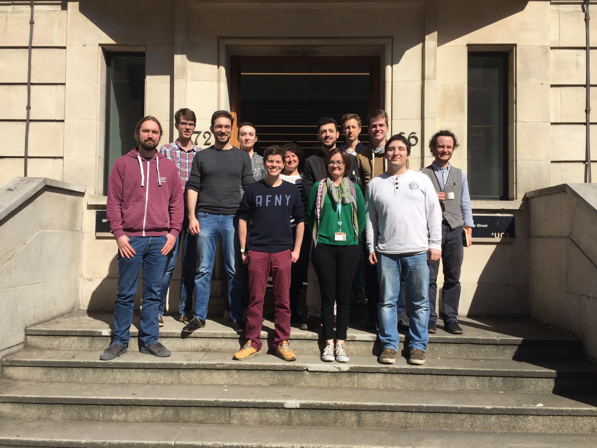

<div id="research" class="page">
    <div class="pageheader">
        <div class="headercontent">
            <div class="section-container">
                <h2 class="title">Research Group</h2>
                </img>
                <p>I am very fortunate to collaborate with an amazing group of students and post-docs.</p>
                        <h3>Current group</h3>
                        <ul>
                            <li><a href="http://paul.brunet-zamansky.fr">Paul Brunet</a> (post-doc),</li>
                            <li><a href="https://fredrikdahlqvist.wordpress.com">Fredrik Dahlqvist</a> (post-doc),</li>
                            <li><a href="https://scholar.google.nl/citations?user=MR5NK30AAAAJ&hl=en">Gerco van Heerdt</a> (PhD student),</li>
                             <li><a href="http://www0.cs.ucl.ac.uk/people/T.Kappe.html">Tobias Kappe</a> (PhD student),</li>
                            <li><a href="http://joshuamoerman.nl">Joshua Moerman</a> (PhD student),</li>
                            <li><a href="http://www0.cs.ucl.ac.uk/people/L.Parlant.html">Louis Parlant</a> (PhD student),</li>
                            <li><a href="http://www.ucl.ac.uk/~ucacsam">Matteo Sammartino</a> (post-doc),</li>
                            <li><a href="http://justinh.su">Justin Hsu</a> (Post-doc).</li>
                        </ul>
                         <h3>Alumni</h3>
                        <ul>
                            <li><a href="https://www.irif.fr/~petrisan/">Daniela Petrisan</a> (post-doc, now at IRIF, Paris),</li>
                            <li><a href="https://moves.rwth-aachen.de/people/kaminski/">Benjamin Kaminski</a> (PhD student, long term visitor from Aachen University),</li>
                            <li><a href="http://heidyk.com">Heidy Khlaaf</a> (PhD student, mainly supervised by Nir Piterman),</li>
                            <li><a href="http://chardet.org">Maverick Chardet </a>(Master student, long term visitor from ENS Lyon),</li>
                            <li><a href="http://alfa.di.uminho.pt/~nevrenato/">Renato Neves</a> (PhD student, long term visitor from Minho University).</li>
                        </ul>
        </div>
    </div>
</div>
</div>
